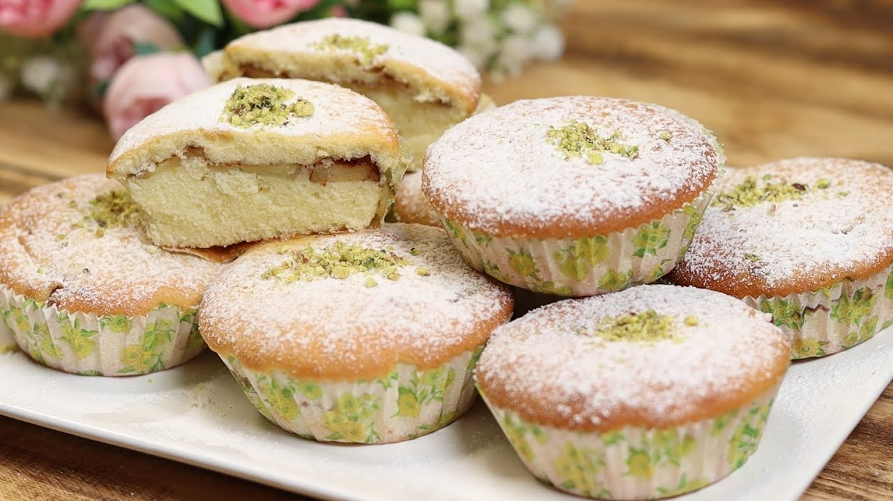

Iranian Apple Pie

Description
This Iranian Apple Pie recipe is one of my favourites. If you go Iranian shops ands bakeries you are almost guaranteed to find this type of pie. It's consistency resembles more a cake than a pie. It is really simple to make, and it's super soft and fragrant. The tartness of the apple mixed with cinnamon and the sweetness of the base makes this recipe very balanced and perfect to accompany an afternoon chai that Irainians love so much.
Hope you like this one! Nushe Jan!
Ingredients
- 4 eggs
- 3/4 cup sugar
- 60 g soft butter
- 125 ml milk
- 1, 2/3 cup flour
- 2 tsp baking powder
- 1 tsp vanilla extract or sugar vanilla
- 2~3 apples
- 1 tsp cinnamon powder
Steps
- Cut the apples into thin slices (but not too thin, about half a centimeter thick), place them on a plate, sprinkle cinnamon over them, and then microwave them for 2 minutes.
- Add the butter and sugar to a large bowl and mix them together well until combined. You can use an electric mixer, but a handheld whisker works just fine. Make sure the butter is very soft.
- Add the eggs and mix them well until combined.
- Add the milk and vanilla essence, followed by the baking powder and the flower. Mix everything well until the batter is lump-free an d fluffy.
- Line a baking tray with greaseproof paper, then pour about 2/3 of the batter inside. Tap the tray on the counter to remove air bubbles. Line the apple slices on top of the batter, then pour the remaining batter over them, so all the slices are covered.
- Put it in the oven at 180 Celsius for about 40 minutes or until cooked. You can sprinkle some icing sugar and crumbled pistachios on top if you want. Nushe Jan!